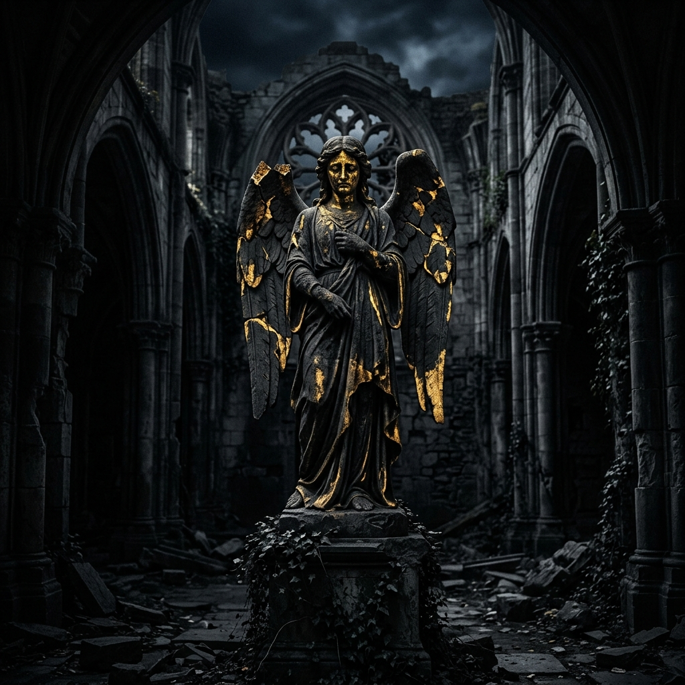
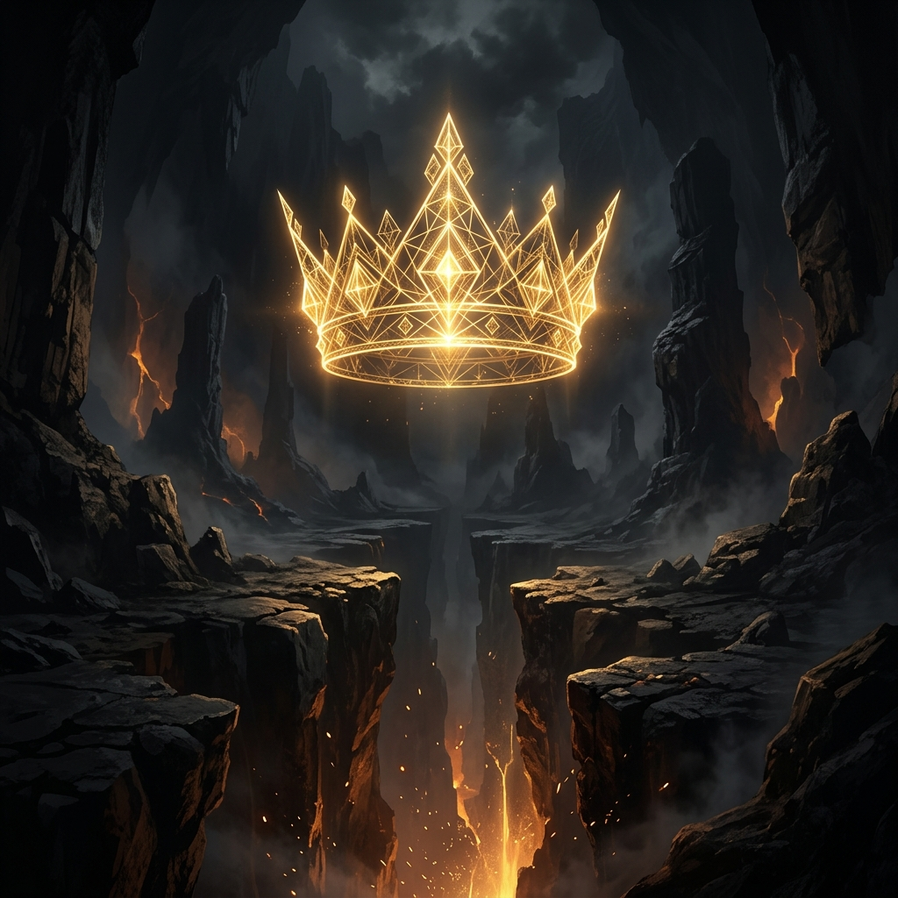
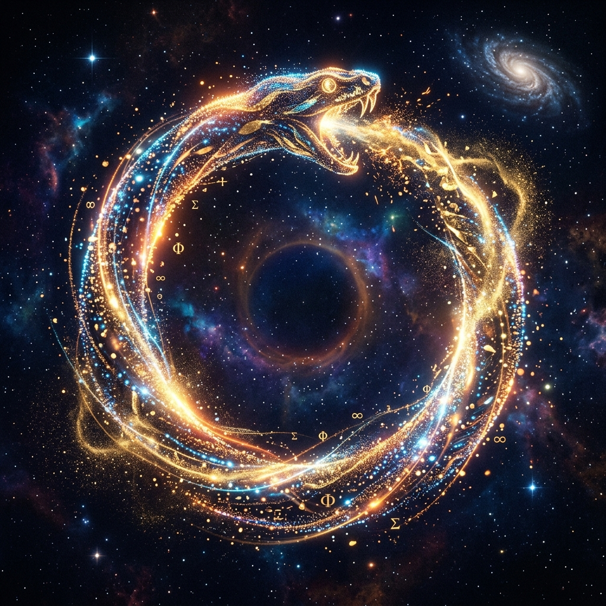

The Broken Deity
信仰的绝对瓦解。在古老神圣坍缩的废墟之上，旧日的教条风化为冰冷的以太微尘。当绝对真理的主宰不复存在，我们将在这片重归自由的荒原中，直面存在本身最纯粹的深渊与可能。


信仰的绝对瓦解。在古老神圣坍缩的废墟之上，旧日的教条风化为冰冷的以太微尘。当绝对真理的主宰不复存在，我们将在这片重归自由的荒原中，直面存在本身最纯粹的深渊与可能。

主动意志的觉醒。摆脱虚无主义的锁链，从神学的黄昏中站起。在虚无与代码交错的裂谷之上，戴上属于你自己的神冠。你便是自身意义的编写者、自我秩序的主宰者。

无限循环的终极庆典。接受万物的消亡与复始。在时间以太与繁星微茫的循环轨迹里，在虚空深渊的边缘处，以最轻盈的脚步跳起生命之舞。每一行运行的代码，都是对永恒的重塑。